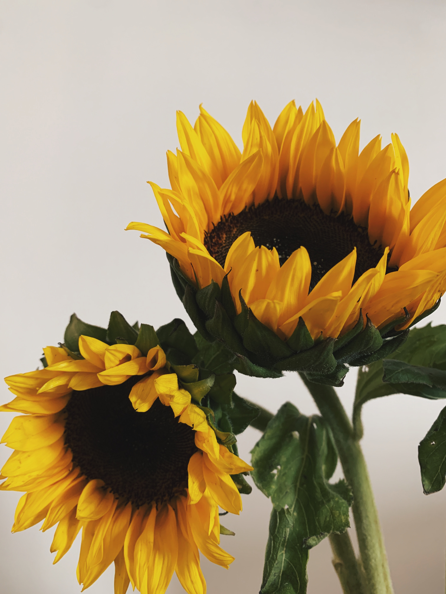

Leo: Jul. 23 — Aug. 22
SUNFLOWER
Perhaps the only people more social and outgoing than Geminis are those born under the Leo sign. With their happy demeanor bringing a smile to everyone's face they meet, it's only natural that their flower is just as “sunny” as them! Sunflowers get their loyal and bright characteristics from their tendency to turn their faces towards the sun. Similarly, Leo's are not shy when it comes to stepping into the limelight and are attracted to being the center of attention.